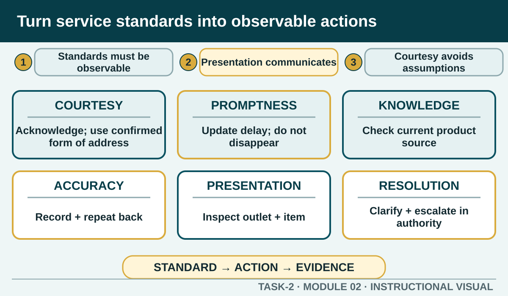

Translate broad expectations such as professional, prompt and accurate into behaviours that students can practise, observe and improve.
Learning intention
What success looks like
Describe observable behaviours for courtesy, promptness, knowledge, accuracy, presentation, personalisation and problem resolution.
Explain how a policy or procedure makes a service standard repeatable.
Respond to a delay without hiding, blaming or making an unconfirmed promise.
Recognise when product knowledge ends and authorised assistance is required.
Core ideas
Build the complete picture
1
A standard must be visible in action
2
Presentation communicates before staff speak
3
Courtesy and personalisation without assumptions
4
Promptness includes updates
Visual explanation
Turn service standards into observable actions

Turn abstract service standards into actions students can see and hear.
Worked example
Courtesy and personalisation without assumptions
Courtesy includes an appropriate greeting, respectful language, attentive body language, listening and a professional close. Personalisation means responding to information the customer has provided, such as using their stated name correctly, remembering a confirmed repeat preference or adapting how options are explained.
A repeat customer asks whether the same non-dairy option they previously chose is available. The worker checks current product information before confirming, rather than relying on memory.
Question the room
Which statement turns 'prompt service' into an observable standard?
Work faster than everyone else.
Acknowledge the customer, communicate the next step and update them when confirmed information changes.
Keep delays hidden until the order is ready.
Apply
Service standards evaluator
Standard: acknowledge promptly, listen without interruption, confirm the request, record accurately, protect privacy and close the interaction with a clear next step.
Classify each observation.
Check your judgement.
Rewrite one 'needs repair' behaviour as an observable service action.
Exit ticket
Action · evidence · next step
Choose one service standard and turn it into three observable worker behaviours, one likely failure and one improvement action.
One action I would take
The evidence I would check
The person or source I would confirm with
My next improvement
1 of 8
Speaker notes and delivery prompts
Open with this purpose: Translate broad expectations such as professional, prompt and accurate into behaviours that students can practise, observe and improve.
Use A standard must be visible in action to connect prior learning to the first observable workplace decision.
Model Courtesy and personalisation without assumptions by walking through this supplied example: A repeat customer asks whether the same non-dairy option they previously chose is available. The worker checks current product information before confirming, rather than relying on memory.
Ask: Which statement turns 'prompt service' into an observable standard? Confirm the strongest response as Acknowledge the customer, communicate the next step and update them when confirmed information changes..
Listen for this misconception: Speed alone is not a complete service standard and may reduce accuracy.
Move into Service standards evaluator, then collect the saved response and finish with the source boundary: Authorised source note: Grounded in T2-S01, T2-S02, T2-S05 and the v2 standards section in T2-S10. Exact local standards and authority levels remain Teacher to confirm.